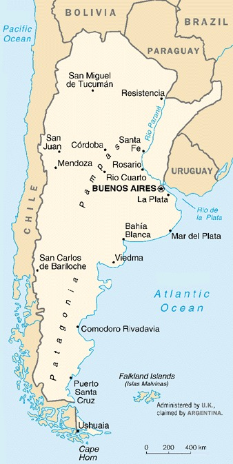
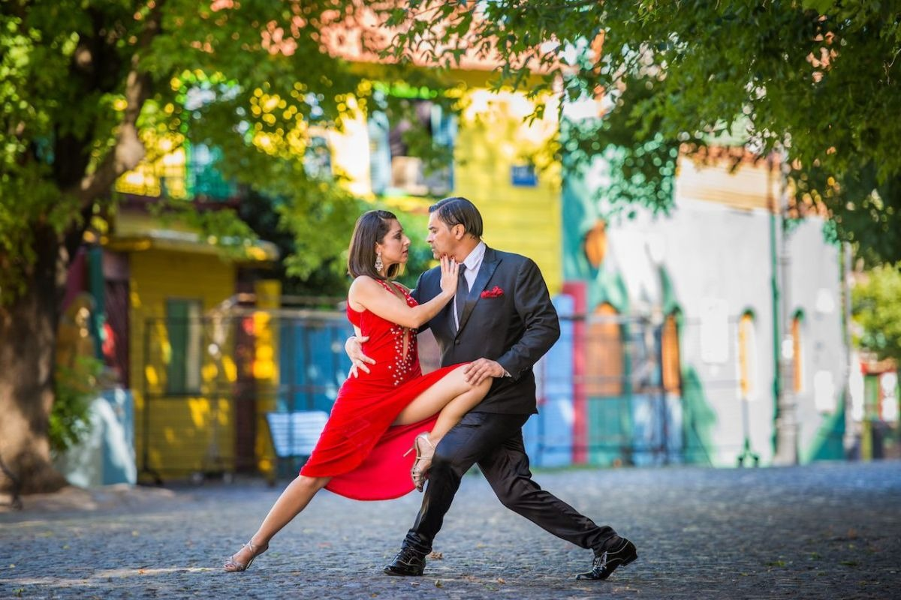
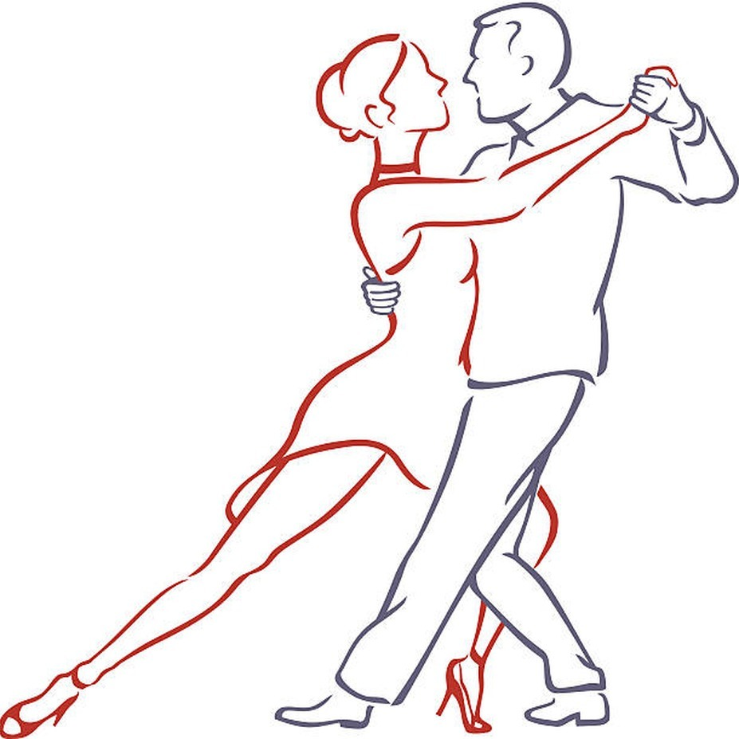
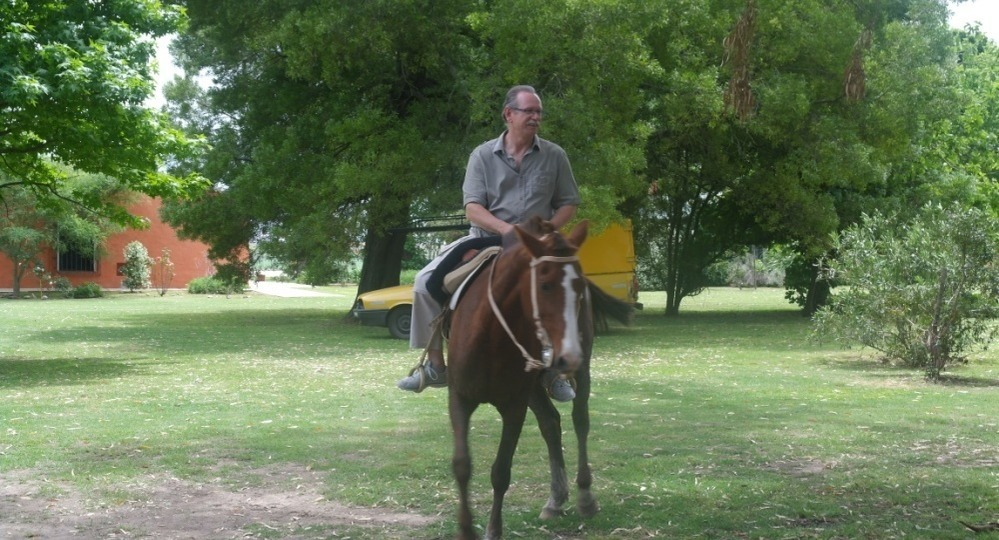
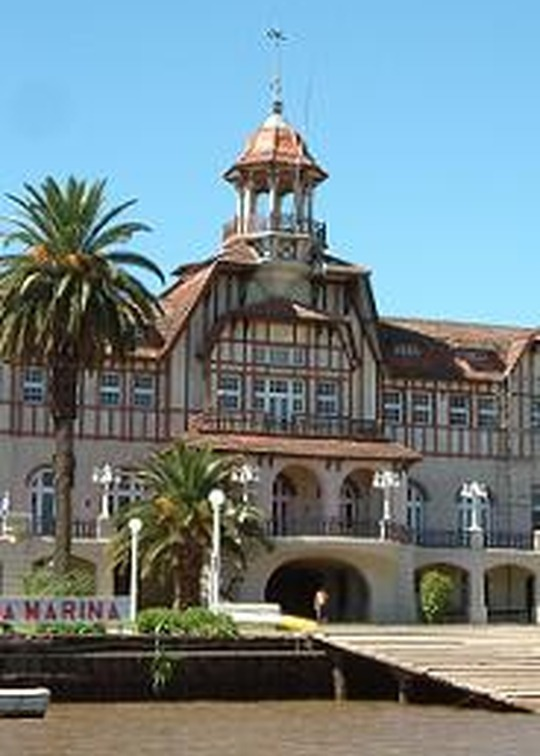
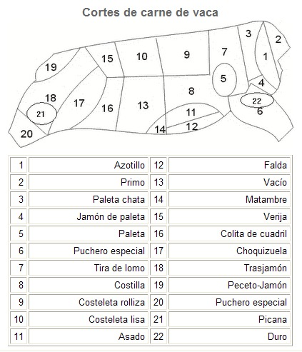
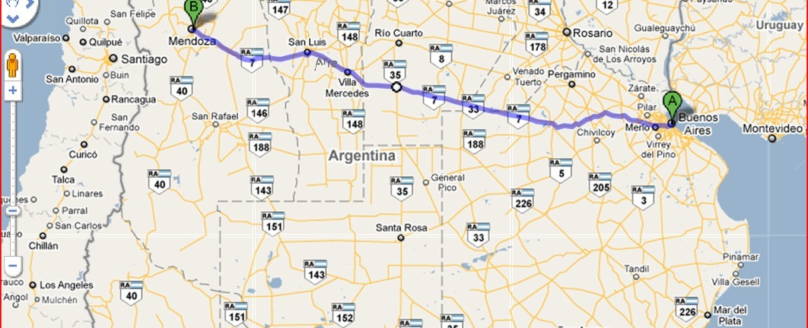
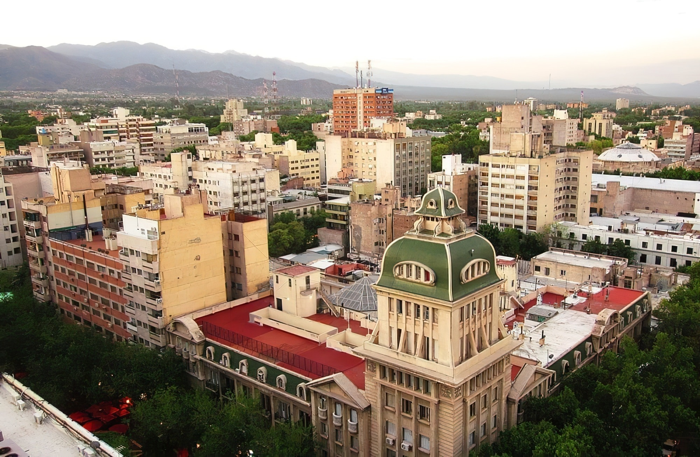
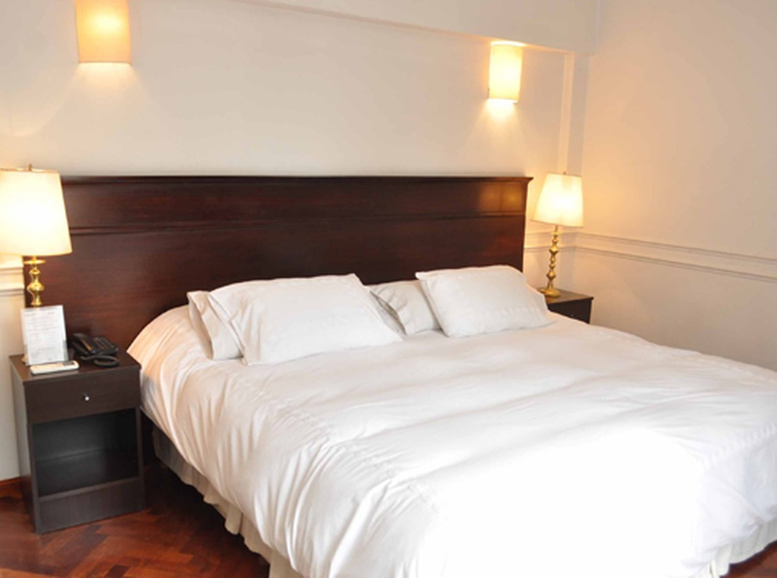
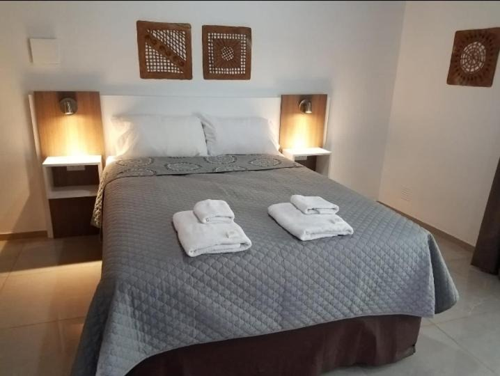

Idée voyage en petit groupe !
Argentine
Tango & Bodegas
18 jours au cœur de l'Amérique latine :
- Buenos Aires, capitale du tango
- Un stage de tango avec des professeurs locaux
- Une échappée dans la Pampa argentine
- Mendoza et ses bodegas de renom
- La Cordillère des Andes
Présentation
Le voyage en un coup d’œil
Direction l'Argentine pour un circuit qui marie passion et authenticité : 18 jours entre les milongas historiques de Buenos Aires, le grand air de la Pampa et les vignobles réputés de Mendoza, au pied de la Cordillère des Andes.
Buenos Aires
La ville qui a vu naître le tango, entre Microcentro animé et milongas légendaires.
Le tango argentin
Stage avec des professeurs locaux et milongas sous les étoiles, tous les soirs de la semaine.
La Pampa
Estancias, chevaux et asado traditionnel, au cœur des grandes plaines argentines.
Mendoza
Capitale du vin argentin, entre bodegas renommées et sommets andins.
Ce circuit combine culture, gastronomie et nature pour une expérience inoubliable, entre spectacles de tango authentiques, dégustations de Malbecs d'exception et paysages époustouflants.
Le pays
Argentine, un continent à elle seule

3 700 km
du Nord au Sud, entre tropique et terres australes
46 M
d'habitants, dont 16 M dans l'agglomération de Buenos Aires
32
parcs nationaux, des Andes à la Patagonie
6 962 m
l'Aconcagua, plus haut sommet des Amériques
Des Andes à la Pampa, en passant par la Patagonie et la Terre de Feu : une mosaïque de paysages à couper le souffle.
Buenos Aires
La capitale qui vit au rythme du tango
Immersion totale dans la culture argentine entre le Microcentro animé, les quartiers historiques et les théâtres de milongas, Buenos Aires se découvre au fil des avenues et des places, un hôtel au cœur de la ville comme point d'ancrage.

- Logement en hôtel au Microcentro, petits-déjeuners et déjeuners inclus
- Un dîner-spectacle pour une première immersion dans l’univers du tango show
- Visite des différents quartiers de la ville
- Une journée libre pour explorer à son rythme
Immersion culturelle
Le tango argentin, une passion à vivre
Un stage de 10 heures avec des professeurs locaux pour s'initier ou se perfectionner aux pas de cette danse passionnée, puis chaque soir, une nouvelle milonga à découvrir : Buenos Aires en compte entre 150 et 200 régulières, avec en moyenne une trentaine ouvertes chaque nuit de la semaine !

À chaque soir sa milonga
Mardi
La Catedral, Le Viejo Correo
Mercredi
La Villa Malcolm
Samedi
Le Club Sunderland
Nature & traditions
Une journée dans la Pampa
À 170 km de Buenos Aires, près de la localité de General Belgrano, la Pampa argentine dévoile ses grands espaces : troupeaux de bétail, chevaux et traditions gauchos, pour une parenthèse authentique au cœur de la campagne.


- Rencontre avec le bétail et les chevaux d’une estancia
- Un authentique asado, la grillade traditionnelle argentine
- Farniente au bord de la piscine
- Une soirée tango pour clore la journée
Nature & littoral
Le Delta du Tigre
À une heure de Buenos Aires, le Delta du Tigre offre une parenthèse nature bienvenue : canaux paisibles, villas centenaires et balade en bateau composent le décor d'une journée aquatique au fil de l'eau.


Saveurs d'Argentine
La gastronomie argentine

Le bœuf argentin
Réputé dans le monde entier : bife de lomo, filet épais et très tendre, ou bife de chorizo, faux-filet cuit sur son propre gras, à savourer arrosé de chimichurri, la sauce qui accompagne toutes les viandes grillées.
Le locro
Un plat traditionnel à base de maïs, pois chiches, lentilles, chorizo, potiron et oignons : le réconfort argentin par excellence.
La provoleta
Un fromage grillé au barbecue, accompagnement classique de l’asado argentin.
Les empanadas
Petits chaussons de pâte farcis de viande hachée ou de poisson, de raisins, d’olives, d’oignons, assaisonnés de poivre et de cumin.
Sur la route
De Buenos Aires à Mendoza
Cap sur l'Ouest et la Cordillère des Andes : direction Mendoza par la mythique Nationale 7, en autocar longue distance tout confort lit-suite. L'occasion de traverser l'immensité du territoire argentin et de mesurer, en chemin, le changement de paysage.

Mendoza
Aux portes de la Cordillère
Il fait bon flâner dans les rues de Mendoza, aussi argentine que déjà un peu chilienne, où le soleil brille 320 jours par an. Vers le milieu du 19ème siècle, l'arrivée des vignerons français, italiens et espagnols donna naissance aux vignobles qui fournissent aujourd'hui les trois quarts du vin argentin.

- Logement en hôtel en centre-ville
- Visite de la ville et de deux bodegas
- Petits-déjeuners et déjeuners pris ensemble
- Une journée libre pour prolonger la découverte
Patrimoine viticole
Mendoza et son fameux Malbec
Le Malbec, cépage français d'origine, a trouvé à Mendoza son terroir de prédilection. Direction le Musée du Vin puis la Bodega La Rural, avant une dégustation chez Trapiche, l'une des maisons emblématiques de la région.
Le Musée du Vin · Bodega La Rural
Une dégustation au cœur de l'une des bodegas historiques de Mendoza.
Trapiche
Dégustation au cœur d’une des maisons emblématiques de Mendoza.
Tradition & sommets
Tango à Mendoza, jusqu’aux Andes
Même loin de Buenos Aires, la passion du tango reste intacte : soirée milonga « Au Café Soul », selon la météo à l'air libre, en compagnie de l'association locale Ana y Luis Tango. Puis excursion vers la Cordillère, jusqu'à la frontière du Chili.
2 700 m
le Pont de l’Inca
Hébergement
Hôtel ou Appartement


Buenos Aires – Microcentro ou San Telmo
En plein cœur de la ville, à deux pas des théâtres et des grandes avenues.
Mendoza – Centre-ville
À proximité immédiate des bodegas et du départ des excursions vers les Andes.
Informations pratiques
À savoir avant de partir
Formalités
Aucun visa n'est nécessaire pour un séjour touristique. Prévoir une photocopie du passeport.
Décalage horaire
- 5 h 00 par rapport à Paris.
Meilleure saison
L'été argentin, de décembre à mars.
Conseils voyageurs
Le Ministère des Affaires Étrangères publie des conseils actualisés par destination.
diplomatie.gouv.fr → Argentine
Le métro circule de 5h à 22h (lundi-samedi) et de 8h à minuit le dimanche. Les déjeuners sont pris ensemble ; les dîners restent libres sauf 3.
Budget
Le peso argentin
Conseil : ne jamais changer à l'aéroport, ni dans la rue.
Taux de change indicatif
1 euro = 1 720 ARS
Bureaux de change
Western Union, les « cuevas », casas de cambio.
Pratique
- Sac à dos pour les escapades à Mendoza, léger pour l’appareil photo et le caméscope
- Prises électriques argentines : norme européenne, double ou triple rond, 220 V
- Bonnes chaussures recommandées : Buenos Aires se visite beaucoup à pied
Sécurité & bon sens
Quelques précautions
Comme dans toute grande ville, quelques règles simples permettent d'aborder le séjour en toute sérénité.
- Ne pas laisser à la vue les sacs à main ou à dos.
- Ne pas porter de bijoux de façon ostentatoire : voleurs à la tire.
- Ne jamais rester seule dans la rue, surtout le soir.
- Faire attention dans les bus et le métro : pick-pockets.
- Faire une photocopie du passeport et du billet d’avion.
- Ne jamais indiquer où l’on habite.
- Attention aux émules de Fangio : bus, voitures.
- Contrôler systématiquement le rendu de monnaie.
Coordonnées utiles
Ambassade de France en Argentine
Cerrito 1399 – CP 1010, Buenos Aires · Tél. : (00 54 11) 45 15 29 67
Standard de l'ambassade
4515 7000
Standard du Consulat général
4515 6900
Urgences consulaires hors horaires
15 4470 3202

Bon séjour au pays du Tango et des Bodegas !

vpdvoyages.com